Pakistan Test Team
Competitive side with a flair for pace bowling.
About Pakistan Test Team
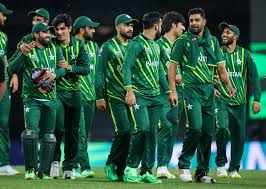
Country: Pakistan
Home Ground: Various (e.g., National Stadium, Karachi)
Captain: Shan Masood
Coach: Jason Gillespie
Pakistan’s Test team is known for its unpredictable brilliance and strong pace bowling attack.
Pakistani Players
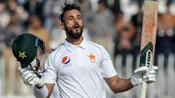
Shan Masood (C)
Captain, batsman.
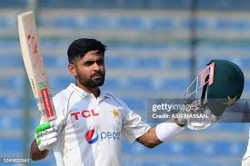
Babar Azam
Batsman, top-ranked anchor.
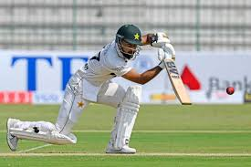
Abdullah Shafique
Batsman, opener.
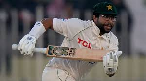
Imam-ul-Haq
Batsman, opener.
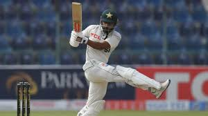
Saud Shakeel
Batsman, middle-order.
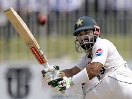
Mohammad Rizwan
Wicketkeeper-batsman, reliable.
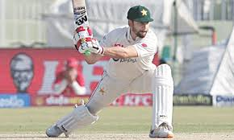
Agha Salman
All-rounder, off-spinner.
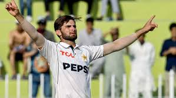
Shaheen Afridi
Bowler, pace spearhead.
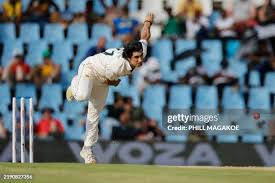
Naseem Shah
Bowler, young pacer.
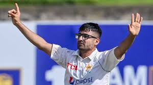
Abrar Ahmed
Spinner, leg-spinner.
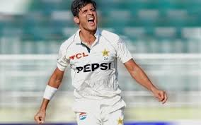
Mir Hamza
Bowler, left-arm pacer.